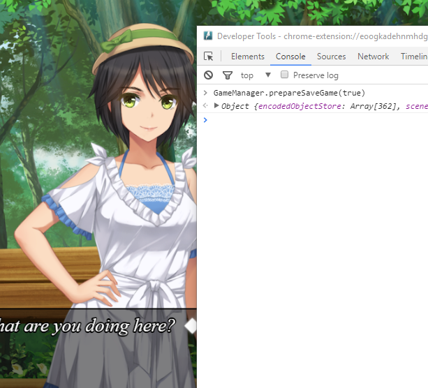
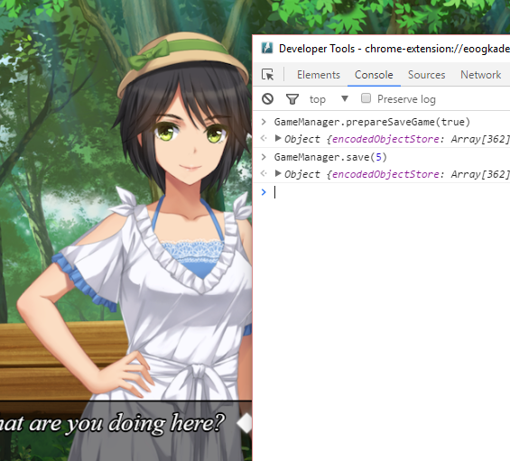
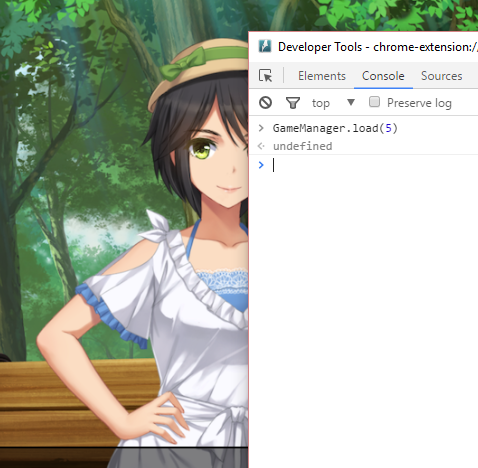
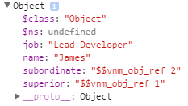
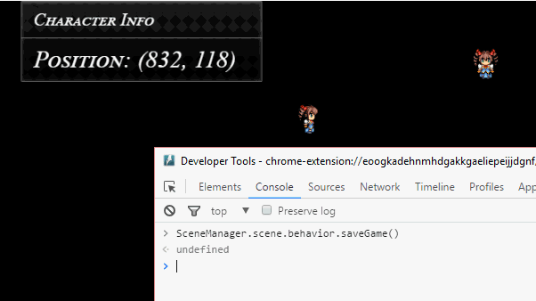
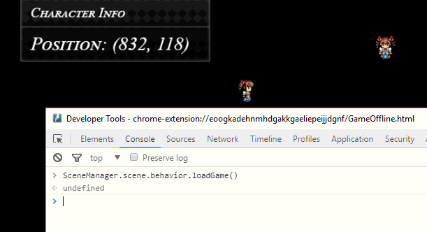

保存系统
保存系统V
isual Novel Maker 的保存系统使用对象序列化/反序列化来保存和加载游戏数据。
保存游戏
要保存当前游戏，我们必须调用两个方法：GameManager.prepareSave 和 GameManager.save。prepareSave 方法创建当前游戏状态的实际快照，并可选地创建当前游戏场景的截图。调用 prepareSave 后，可以通过 GameManager.saveGame 属性访问快照。save 方法然后只需将该游戏快照写入磁盘上的文件。

让我们通过启动一个示例场景来实时尝试一下，然后打开调试工具（Windows/Linux 上按 F12，macOS 上按 Ctrl+Shift+i）。为了使其正常工作，由于我们的测试场景在脚本编辑器中，只需右键单击要用于此示例的场景，然后右键单击 > 设置为介绍场景。然后开始游戏。如果我们调用 GameManager.prepareSaveGame，将创建一个当前游戏状态的快照并返回，同时存储在 GameManager.saveGame 属性中。我们将true

作为参数传递，表示我们还希望获取当前场景的屏幕截图以用于保存/加载游戏菜单。接下来我们需要做的是将快照写入磁盘文件。
使用 GameManager.save，我们将游戏快照写入磁盘以永久存储。因此，我们可以在下一步中再次加载它。我们将 5 作为参数传递，表示我们要将其存储在保存槽 6 中（计数从 0 开始）。
要将测试场景恢复原状，只需转到数据库 > 系统，然后取消选中“介绍场景”复选框。然后开始游戏，您将返回到测试场景。
加载游戏

要加载我们保存的游戏，我们只需调用 GameManager.load 方法，正如我们在下面的示例中所见：
当然，只有当我们指定的插槽中有保存的游戏时，这才能起作用。调用该方法后，如果我们回到游戏中，它将淡出并加载保存的游戏。
保存过程
将 JSON 字符串写入磁盘文件
让我们一步一步地完成这四个步骤。
收集需要保存的数据
在第一步中，我们必须收集所有需要序列化的数据。让我们在场景中添加一个新方法“saveGame”，我们将在其中执行场景的保存。
# 保存我们的游戏 saveGame: () -> # 收集要保存的数据。我们只需要保存 # 我们的 NPC 和玩家角色对象。 gameData = { npcObject: @npcObject playerObject: @playerObject } # 让我们创建当前场景的截图 # 获取当前的（旧的）截图对象。 snapshot = ResourceManager.getCustomBitmap("$snapshot") # 如果存在，请释放旧截图对象的内存。 snapshot?.dispose() # 创建一个新的快照，并将其存储为 ID 为“$snapshot”的自定义位图对象。 ResourceManager.setCustomBitmap("$snapshot", Graphics.snapshot())
如我们在此处所见，首先我们收集了重建整个场景所需的所有数据和游戏对象。由于我们的场景非常简单，因此它们仅限于 NPC 和玩家角色。接下来，我们创建屏幕截图，供以后在保存/加载菜单中使用。setCustomBitmap 方法允许我们将位图对象存储在一个指定名称下以供以后访问。我们将快照位图放在“$snapshot”下。
编码收集到的数据，以便将其序列化为 JSON
函数/方法/回调
因此，我们不能仅使用 JSON.stringify 方法序列化我们的游戏对象，因为这会导致序列化错误或不完整、无法恢复的 JSON 输出。
这就是为什么 VN Maker 提供自己的编码机制，通过 gs.ObjectCodec 和 gs.ObjectCodecContext 类。术语“codec”代表“Encoder & Decoder”（编码器和解码器），因此这些类允许您编码和解码数据。
让我们通过扩展我们的 saveGame 方法来尝试下一步。
# 保存我们的游戏 saveGame: () -> # 收集要保存的数据。我们只需要保存 # 我们的 NPC 和玩家角色对象。 gameData = { npcObject: @npcObject playerObject: @playerObject } # 让我们创建当前场景的截图 # 获取当前的（旧的）截图对象。 snapshot = ResourceManager.getCustomBitmap("$snapshot") # 如果存在，请释放旧截图对象的内存。 snapshot?.dispose() # 创建一个新的快照，并将其存储为 ID 为“$snapshot”的自定义位图对象。 ResourceManager.setCustomBitmap("$snapshot", Graphics.snapshot()) # 创建一个编解码器上下文来编码游戏数据 context = new gs.ObjectCodecContext() # 将根视口添加到上下文 context.decodedObjectStore.push(Graphics.viewport) # 将场景对象添加到上下文 context.decodedObjectStore.push(@object) # 将测试场景行为组件添加到上下文 context.decodedObjectStore.push(this) # 创建保存游戏对象 saveGame = {} # 编码游戏数据，以便稍后可以序列化为 JSON 字符串。 saveGame.data = gs.ObjectCodec.encode(gameData, context) # 添加属性以按引用 ID 存储所有编码的对象。 saveGame.encodedObjectStore = context.encodedObjectStore
如我们所见，我们首先创建一个新的实例对象 gs.ObjectCodecContext，它反映了编码过程的当前状态。实际编码稍后使用 gs.ObjectCodec.encode 方法完成。因此，gs.ObjectCodec 是一个静态类，它接受一个 gs.ObjectCodecContext 对象来处理正确的数据。
decodedObjectStore 是迄今为止所有已编码对象的列表。编码器使用该列表来跟踪已编码的对象。编码器递归遍历数据，每当遇到一个对象时，它就会将其放入 decodedObjectStore 列表，并在输出结构中用 "$vnm_ref_<index>" 字符串替换它。
所以，假设我们有以下结构：
peter = { name: "Peter", job: "CEO" } mike = { name: "Mike", job: "Developer" } james = { name: "James", job: "Lead Developer", superior: peter, subordinate: mike }
然后，如果我们编码 james，编码后的输出将如下所示：
$$vnm_obj_ref 0

这是一个引用，表明对象可以在上下文的 encodedObjectStore 的索引 0 处找到。所以，如果我们打印：context.encodedObjectStore[0]，我们会得到：
因此，我们可以看到所有对象都被替换为所谓的“vnm 对象引用”。末尾的数字表示对象可以在上下文的 encodedObjectStore 中的何处找到。这种编码数据的方式对于支持引用和循环引用至关重要，以实现无缝的游戏状态重建。我们在这里还可以看到“$class”和“$ns”，它们存储对象的类和命名空间信息，以便可以正确重建它。
在我们的 saveGame 方法中，我们手动向 decodedObjectStore 添加了 3 个对象：根视口、场景对象和我们的测试场景行为组件。我们这样做是为了让编码器认为这些对象已被编码，即使它们实际上没有。因为这些对象是特殊情况：我们希望编码器将它们的引用放入编码的输出结构中，但实际上不希望编码它们，也不希望稍后将它们序列化为 JSON。
这是必需的，因为这些对象不应该存储在保存的游戏文件中，而是被我们的游戏对象引用。因此，当加载和重建游戏时，我们需要在运行时将我们的游戏对象中的引用设置为正确对象。我们稍后加载游戏时会看到这一点。
encodedDataStore，这是一个包含实际编码对象的列表，因为 encode 方法只返回一个引用 ID。
之后，我们的 saveGame 对象包含了重建场景所需的所有数据。因此，它已准备好在下一步进行序列化为 JSON 字符串。
由于我们收集的数据现在已正确编码，我们可以使用 JSON.stringify 函数轻松地将其序列化为 JSON 字符串。
# 保存我们的游戏
saveGame: () ->
# 收集要保存的数据。我们只需要保存
# 我们的 NPC 和玩家角色对象。
gameData = {
npcObject: @npcObject
playerObject: @playerObject
}
# 让我们创建当前场景的截图
# 获取当前的（旧的）截图对象。
snapshot = ResourceManager.getCustomBitmap("$snapshot")
# 如果存在，请释放旧截图对象的内存。
snapshot?.dispose()
# 创建一个新的快照，并将其存储为 ID 为“$snapshot”的自定义位图对象。
ResourceManager.setCustomBitmap("$snapshot", Graphics.snapshot())
# 创建一个编解码器上下文来编码游戏数据
context = new gs.ObjectCodecContext()
# 将根视口添加到上下文
context.decodedObjectStore.push(Graphics.viewport)
# 将场景对象添加到上下文
context.decodedObjectStore.push(@object)
# 将测试场景行为组件添加到上下文
context.decodedObjectStore.push(this)
# 创建保存游戏对象
saveGame = {}
# 编码游戏数据，以便稍后可以序列化为 JSON 字符串。
saveGame.data = gs.ObjectCodec.encode(gameData, context)
# 添加属性以按引用 ID 存储所有编码的对象。
saveGame.encodedObjectStore = context.encodedObjectStore
# 将保存游戏数据序列化为 JSON 字符串
jsonOutput = JSON.stringify(saveGame)jsonOutput 变量包含我们的保存游戏数据，这是一个 JSON 字符串，已准备好存储在磁盘上。
我们最后要做的是将 JSON 字符串写入磁盘文件。由于 VN Maker 使用 NW.js 来运行 PC/Mac 的游戏，我们可以直接使用它的 API 将 JSON 字符串写入磁盘文件。
# 将数据存储在磁盘上的“saveGame.dat”文件中。
require("fs").writeFileSync("./saveGame.dat", jsonOutput, "utf-8")
然而，该示例不是平台无关的。VN Maker 游戏可以在各种平台上运行，如智能手机、平板电脑，甚至可以在浏览器中运行。NW.js API 仅在 PC/Mac 上可用，因此如果我们想保持平台无关，最好不要直接使用它。相反，我们可以使用 gs.GameStorage 类，它为我们提供了平台无关的数据存储方式。
# 保存我们的游戏
saveGame: () ->
# 收集要保存的数据。我们只需要保存
# 我们的 NPC 和玩家角色对象。
gameData = {
npcObject: @npcObject
playerObject: @playerObject
}
# 让我们创建当前场景的截图
# 获取当前的（旧的）截图对象。
snapshot = ResourceManager.getCustomBitmap("$snapshot")
# 如果存在，请释放旧截图对象的内存。
snapshot?.dispose()
# 创建一个新的快照，并将其存储为 ID 为“$snapshot”的自定义位图对象。
ResourceManager.setCustomBitmap("$snapshot", Graphics.snapshot())
# 创建一个编解码器上下文来编码游戏数据
context = new gs.ObjectCodecContext()
# 将根视口添加到上下文
context.decodedObjectStore.push(Graphics.viewport)
# 将场景对象添加到上下文
context.decodedObjectStore.push(@object)
# 将测试场景行为组件添加到上下文
context.decodedObjectStore.push(this)
# 创建保存游戏对象
saveGame = {}
# 编码游戏数据，以便稍后可以序列化为 JSON 字符串。
saveGame.data = gs.ObjectCodec.encode(gameData, context)
# 添加属性以按引用 ID 存储所有编码的对象。
saveGame.encodedObjectStore = context.encodedObjectStore
# 将保存游戏数据序列化为 JSON 字符串
jsonOutput = JSON.stringify(saveGame)
# 永久存储保存的游戏数据。
gs.GameStorage.setData("CustomSaveGame", jsonOutput)
就是这样，现在我们可以通过调用我们的 saveGame 方法来使用调试控制台保存我们的游戏。
让我们创建一个新方法“loadGame”来执行加载。
# 加载我们的游戏
loadGame: ->
# 从存储中获取保存的游戏数据
saveGame = gs.GameStorage.getData("CustomSaveGame")
# 如果没有 saveGame，我们将在此处中止
if not saveGame then return
# 解析保存的游戏数据 JSON 文本
saveGame = JSON.parse(saveGame)
# 清理当前场景并处置我们的角色。
@npcObject.dispose()
@playerObject.dispose()
# 创建一个编解码器上下文以正确解码数据
context = new gs.ObjectCodecContext()
# 将根视口、场景对象和测试场景行为添加到列表
# 已解码对象
context.decodedObjectStore = [Graphics.viewport, @object, this]
# 分配保存游戏数据中的编码对象列表。
context.encodedObjectStore = saveGame.encodedObjectStore
# 解码保存的游戏数据
saveGame.data = gs.ObjectCodec.decode(saveGame.data, context)
# 向所有解码的游戏对象触发恢复事件。
gs.ObjectCodec.onRestore(saveGame.data, context)
# 重构玩家和 NPC
@playerObject = saveGame.data.playerObject
@npcObject = saveGame.data.npcObject
# 将重构的玩家和 NPC 添加到场景中
@object.addObject(@playerObject)
@object.addObject(@npcObject)
调用此命令后，我们的场景将被加载。
在此主题中，我们已经了解了 VN Maker 的保存系统，甚至成功保存和加载了我们自己的自定义场景。但是，默认的保存和加载过程要复杂一些。但通过此主题的知识，您应该能够理解它。以下描述为您提供了一些提示，以方便您理解它。
如果您在保存菜单中点击一个保存游戏槽，将调用 GameManager.save 并使用您选择的槽来存储 GameManager.saveGame 属性中存储的快照。